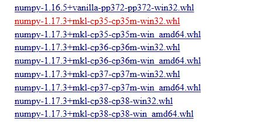

使用 pip 安装 Scipy 库时，经常会遇到安装失败的问题
1 pip install numpy
2 pip install scipy后来网上搜寻了一番才得以解决。scipy 库需要依赖 numpy+mkl 这样的一个包，而pip默认安装的是 numpy 的包，所以会由于依赖的问题而导致安装 scipy 失败。
正确方法如下：
首先在 http://www.lfd.uci.edu/~gohlke/pythonlibs/ 手动下载 numpy+mkl 包（建议 Ctrl+F 查找，里面东西太多了~）并保存本地。在这网页中每种包有多个版本可供下载，这就需要选择一个适合自己 Python 版本的包。

比如 cp35-cp35m 代表 Python 3.5，win32 代表 python 是 win32 位的，win amd64 代表 win64 位的 python 版本。
然后进入命令行界面（win + R 输入 cmd 再回车，或者按住 Shift 键点击右键，选择 ‘在此处打开 PowerShell 窗口’），切换到刚刚下载的 whl 文件的路径下，使用命令 pip install numpy-1.17.3+mkl-cp35-cp35m-win32.whl 进行安装。
之后，使用同样的方法安装 scipy，安装成功后即可在 Python 中导入这两个包了。
1 import scipy
2 import numpy as np